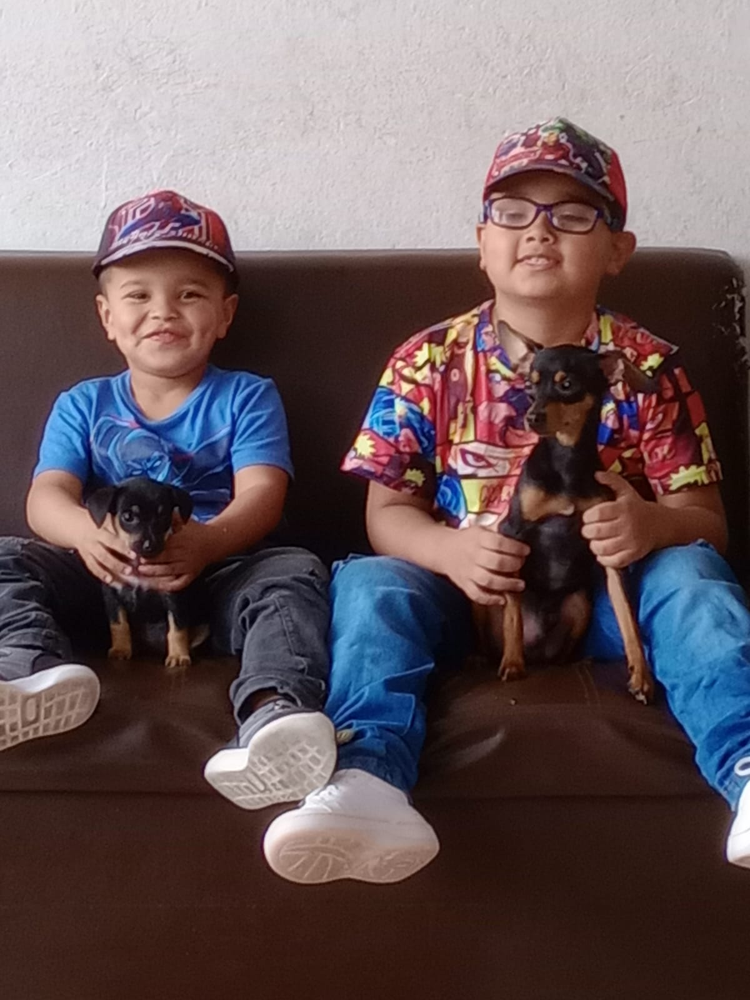

Proyecto de Vida
Momentos importantes - Acontecimientos
Pandemia:
Amigos
Respecto a los amigos pasaron cosas buenas y malas
1. Aspectos malos
La pandemia respecto a los amigos fue difícil ya que debido al encierro deje de hablar con mucha gente incluso con gente que era muy importante para mi
2. Aspectos buenos
Me di cuenta que tenia amigos que no erän läs mejores influencias y despues de que llegamos otra vez al colegio conoci personas que ahora forman una parte muy importante en mi vida
Yo
Conmigo también pasaron cosas buenas y malas
1. Aspectos malos
Empecé a tener problemas con la alimentación y baje bastante de peso (me ayudo pero no fue la mejor manera) también empecé a tener basdtantes problemas de salud
2. Aspectos buenos
Me volví a hablar con mi tío ya que una vez tuvimos una pelea y dejamos de hablarnos como por dos años
Familia
Respecto a mi familia también hay cosas buenas y malas
1. Aspectos malos
Deje de ver a mi mama y a mis hermanos por mucho tiempo, debido a que estaba con mi abuela y mi tío todo el tiempo nos irritábamos fácil y habían algunas peleas
2. Aspectos buenos
Compartimos mas en familia, jugábamos parques casi todo los dias (ahora es algo que se hace mas seguido cosa que no se hacia antes) y mi tio pudo comprar su propio apartamento
Viajes:
He ido a Medellin, Barranquilla, Cartagena, San Andres, Santander, tolima y definitivamente mi viaje favorito fue a San Andres porque apesar de que no me gusta el mar ahi se ve hermoso
La primera vez que fui al mar:
La primera vez que fui al mar fue en Barranquilla y ahi me di cuenta de que tengo talasofobia y tambien casi me ahogo
La primera vez que viaje en avion:
La primera vez que aviaje en avión fue a Santander, estaba muy neviosa y no queria viajar ya que me daba miedo que el avión se dañara, pero llegamos bien y ahora es una de mis cosas favoritas

Nacimiento de Camilo:
Camilo es mi primero hermano y nacio hace 8 añitos
Nacimiento de Samuel:
Samuel es mi segundo hermano y nacio hace 5 añitos
Los XV de mi amiga:
Esto lo voy a recordar por mucho tiempo y es porque en estos XV me pegue mi primera borrachera fue horrible pero ahora es un recuerdo muy gracioso
Mis XV:
Esto fue una de las cosas más bonitas de mi vida porque apesar de que yo no queria fiesta ni nada por el estilo mi familia se encargo de no hacerme caso y hacer mi fiesta de XV y de verdad agradezco que lo hayan hecho la pase muy bien con mi familia e amigos y sin mencionar que mi vestido estaba hermoso